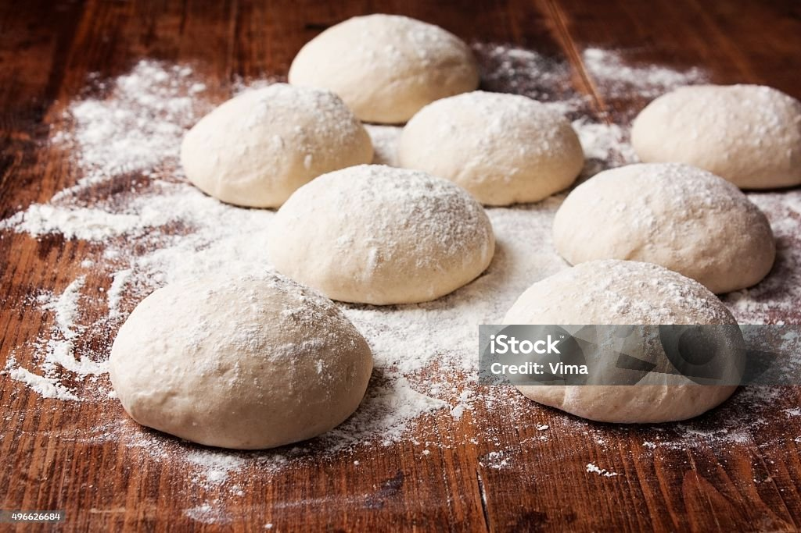

This pizza dough recipe was given to me by a friend.
It's quick and easy to make for a delicious homemade
pizza crust that you can top with pizza sauce and your
favorite toppings!
This simple pizza dough comes together easily in a stand
mixer for a tender, homemade crust